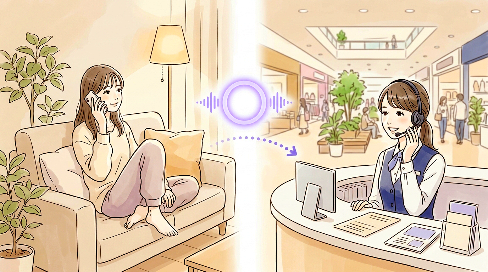
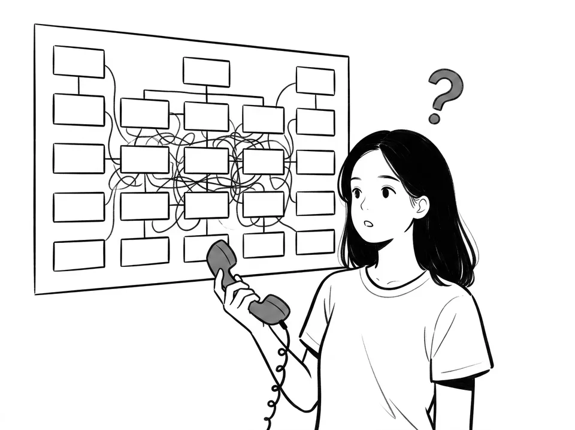
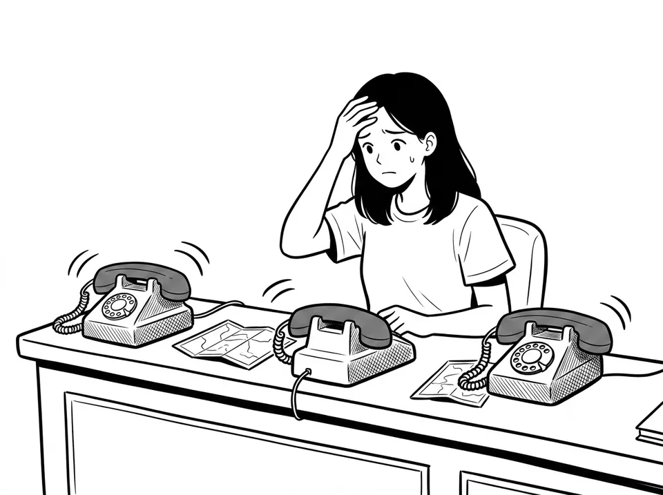
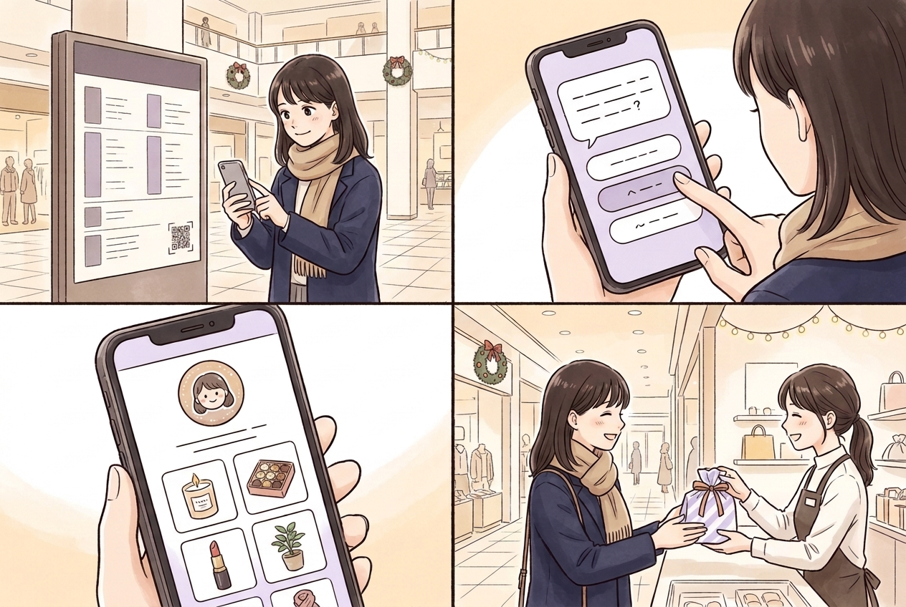

Web・LINE・店頭で使っているナレッジが、そのまま電話に。一次対応から、用件を判断した取次まで自動化。任せる範囲は段階的に広げられ、いつでも戻せます。

利用イメージ：定型の案内は AI、判断が必要な相談は担当者へ

用件を聞き取り、部署・店舗を判断して転送するだけで手が止まる。
FAQ で済む用件に時間を取られ、複雑な相談の対応品質に響く。

定型の質問が多いのに、24 時間の人手対応は難しい。
↓これらの悩みを、AI 電話受付・取次が解決↓
応答スタイル 3 段階AI が答える範囲をスライダーで調整
AI コパイロット有人通話を文字起こし、回答候補を提示
通話コスト可視化通話ごとの AI コストを自動で表示
※ 数値は想定される導入効果の目安です。業種・コール内容・運用条件により異なります。図は目安を示すイメージです。
ホテル受付を例にしたデモ回線です。24 時間受付・通話料はお客様のご負担となります
詳しい機能はこちら
3 つの質問に答えるだけ。AI が会話で気分をたずね、今日のタイプとおすすめの商品・お店をご提案します。行き先が決まっていない来館者も、気になったお店までそのままご案内できます。
画面イメージ（企画例）。質問・タイプ・デザインは施設ごとに作成します

利用イメージです（架空の施設）。左上 → 右上 → 左下 → 右下の順
来館のきっかけづくり占い・診断の話題性で、「ちょっと寄ってみよう」という来館動機を創出
まだ知らないお店へ回遊目的の店以外にも足を運ぶ導線。結果から店舗詳細・ルート案内へ
季節・イベントの販促にクリスマス・周年祭など、企画に合わせて診断を作成
店舗へバランスよく送客表示回数を店舗ごとに均等化。テナントにも説明しやすい公平な仕組み
何度来ても新しい発見質問や結果が季節ごとに変わり、リピーターにも新鮮さ。滞在時間の延長につなげる
効果をデータで確認表示回数・タップ数を店舗別に集計。テナントへの報告にも活用
※ 企画例です。効果は施設・企画内容により異なります。表示ルール・レポート項目は施設ごとにご相談のうえ設計します。
※ 館内 AI 案内の標準構成の場合。診断の企画・制作期間は別途ご相談
診断の企画からご相談ください質問・タイプ・結果のことばの設計、商品データの集め方、テナントへの説明資料まで、施設の運営に合わせてご提案します。
〒103-0001 東京都中央区日本橋小伝馬町6-12
日本橋森ビル 3F
TEL 03-3527-2828（AI 自動応答 試験運用中）
※ 画面・イラストは利用イメージです。記載の会社名・製品名は各社の商標または登録商標です。